操作详解
出自多玩《怪物猎人P3》数据库
|
|

目录 |
基本操作
| 方向键 |
视角变更 |
| 摇杆 | 玩家移动 |
| △键 | 亮出武器 移动中三角键，拔刀攻击（弩除外） |
| ○键 | 调查 爬台阶 决定选项 |
| ×键 |
蹲下 |
| □键 | 物品使用 收武器 |
| L键 | L键轻按后放开：视角归为玩家方向 L键按住：大开选择物品窗口 L＋口or〇：物品选择 L＋△or×：瓶、弹药选择（弓弩专用） |
| R键 | 移动＋R：冲刺 持武器时R，或者收武器时R＋〇＋△：武器特殊动作。（参照武器使用方法） |
| SELECT键 | 脚踢 |
| START键 | 打开/关闭菜单 |
单手剑
|
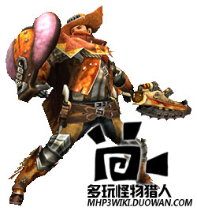 | △键 | 斩击（连续输入可以连续攻击）切断属性 |
| ○键 | 水平斩 切断属性 | |
| △+○键 | 跳跃斩 切断属性 | |
| ×键 |
回避动作 | |
| □键 | 收武器 | |
| R键 | 防御 防御中〇：防御攻击 防御中△：捞斩 防御中口：使用物品 | |
| SELECT键 | 回旋斩 | |
| 收刀状态时R＋〇＋△ | 防御 | |
| 前滚或跳斩后△ | 捞斩 | |
| 连续攻击中按×键 | 可以派生出回避动作。 | |
| 摇杆向前方推动的同时按〇 | 盾攻击 打击属性 | |
| 盾攻击后〇键 | 背拳击打 打击属性 | |
| 水平斩后〇键 | 逆向斩 切断属性 ※连续技专用攻击 | |
| 关于攻击派生 | △键的连续攻击中可以派生出〇键的攻击。 各中攻击后按〇＋△可以派生出“回旋斩”。 |
双刀
|
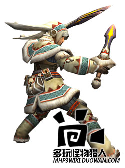 | △键 | 二段斩（连续输入可连续攻击） 双剑的所有攻击都是切断属性 |
| ○键 | 右二连斩（鬼人化时是双回旋斩） | |
| △+○键 | 横扫（鬼人化时是乱舞） | |
| ×键 |
回避动作 | |
| □键 | 收武器 | |
| R键 | 鬼人化（鬼人化中是鬼人化解除） | |
| 收刀状态时R＋〇＋△ | 鬼人化（鬼人化中消耗耐力） | |
| 前滚或横扫后△ | 捞斩 | |
| △键的攻击中按〇键 | 可以接二连斩，按×键可以派生回避动作。 | |
| 鬼人强化 | 鬼人化时攻击命中怪物后，“鬼人槽”会增长。鬼人槽蓄满后，“通常状态”会变成“鬼人强化状态”，攻击速度上升，还能使用特殊行动。 ※“鬼人槽”经过一定时间或者使用特殊行动后会减少。 | |
| 鬼人化中，或者鬼人强化中×键 | 鬼人回避 可以快速连续回避（要消耗耐力）（鬼人强化状态时还要消耗鬼人槽） | |
| 鬼人强化状态中二段斩，或者二连斩后〇＋△（消耗鬼人槽） | 鬼人连斩 ※连续技专用 |
大剑
|
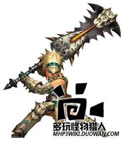 | △键 | 纵斩（按住可以蓄力） 切断属性 |
| ○键 | 横扫 切断属性 | |
| △+○键 | 捞斩 切断属性 | |
| ×键 |
回避动作 | |
| □键 | 收武器 | |
| R键 | 防御 防御中△：脚踢 | |
| 收刀状态时R＋〇＋△ | 防御 | |
| 短按△的拔刀攻击 | 纵斩 快速攻击 | |
| 长按△的拔刀攻击 | 蓄力斩 | |
| 关于蓄力斩 | 蓄力斩的蓄力段数和蓄力时间有关。蓄力时间越长，身上闪光越强，但是蓄力过头反而会变弱。抓准闪光最大瞬间，掌握好时机放开按键威力会大幅度上升。 | |
| 脚踢或纵斩后按△ | 拍击 打击属性 ※连续技专用 | |
| 拍击后推动摇杆的同时按△键 | 强蓄力斩 切断属性 ※连续技专用 |
太刀
|
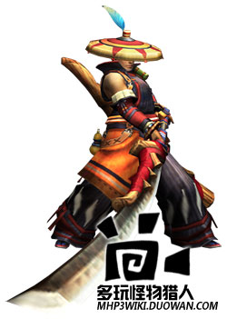 | △键 | 踏前斩(太刀的所有攻击都是切断属性) |
| ○键 | 突刺 | |
| △+○键 | 后退斩 | |
| ×键 |
回避动作 | |
| □键 | 收武器 | |
| R键 | 气刃斩（只有有炼气槽就可以连续输入） | |
| 收刀状态时R＋〇＋△ | 气刃斩 | |
| 关于炼气槽 | 通常攻击命中后，画面上方红色的“炼气槽”会积攒。 在这个状态下按R键，可以消耗炼气槽，释放强力的“气刃斩”。 | |
| 攻击后，推动摇杆的左（或右）的同时按下〇＋△ | 移动斩 ※连续技专用攻击 | |
| 气刃斩连续输入3次后按R键（消费炼气槽） | 气刃大回旋斩 ※连续技专用攻击 | |
| 关于气刃大回旋斩 | 攻击怪物后炼气槽周围的颜色会变化，攻击力上升。 （这个效果经过一定时间后会消失） |
斩击斧
|
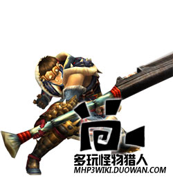 | △键 | 纵斩 移动中△：冲刺斩（斧模式专用） 斩斧在斧模式下的所有攻击都是“切断属性” |
| ○键 | 横斩 | |
| △+○键 | 斧模式时：捞斩 剑模式时：属性释放突刺 | |
| ×键 |
回避动作 | |
| □键 | 收武器 | |
| R键 | 变形 | |
| SELECT | 捞斩 | |
| 收刀状态时R＋〇＋△ | 变形攻击 | |
| 攻击后立即摇杆的左右＋Ｘ键 | 侧滑步 | |
| 关于斩击槽 | 斩击槽消耗后，只要不是剑模式，就能渐渐回复斩击槽。 出现RELOAD信号时，按R键装填，可以回复斩击槽。 | |
| 剑模式的特征 | 剑模式时，可以消耗斩击槽，使用内藏瓶子的效果。 | |
| 属性释放突刺后，△连打 | 大量消耗斩击槽，将瓶子的效果一口气释放的，能造成巨大伤害。 ※摇杆向后方推动时连打可以快速释放。 ※连续技专用 | |
| 斧模式时：捞斩之后〇键 | 挥舞 连打时会不停消耗耐力连续攻击。 ※连续技专用 | |
| 斧模式时：冲刺斩后，R键 剑模式时：横斩后，R剑 | 变形攻击 变更武器模式的同时攻击。 ※连续技专用 |
锤子
|
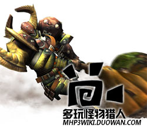 | △键 | 纵挥击（可以连续3次输入） ※第二击之后按R键可以蓄力派生 锤的所有攻击都是“打击属性” |
| ○键 | 横挥击 ※按R键可以蓄力派生 ※按△键可以连续纵击 | |
| ×键 |
回避动作 | |
| □键 | 收武器 | |
| R键 | 蓄力（R键放开后有3个阶段的攻击变化 蓄力时消耗耐力 ） | |
| 收刀状态时R＋〇＋△ | 蓄力 | |
| 关于攻击派生 | 各种攻击后接续蓄力，或者蓄力后接续各种攻击都成为可能。可以通常攻击和蓄力之间无间断的连续。 | |
| 关于蓄力攻击 | 持续按住R键可以蓄力 放开R键可以释放强力攻击，根据蓄力时间，有3个阶段的变化 | |
| 蓄力阶段1 | 挥击（按△可派生连击） 按〇或△可连续通常攻击 | |
| 蓄力阶段2 | 捞击 按〇或△可连续通常攻击 | |
| 蓄力阶段3 | 按住摇杆时放开R键 回旋攻击 ※2～3次回旋后△：抡击 ※4～5次回旋后△：上击 | |
| 不推摇杆时放开R键 | 砸地 大地一击 |
狩猎笛
|
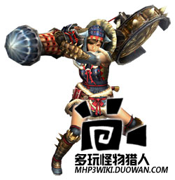 | △键 | 左抡打击属性 |
| ○键 | 右抡打击属性 | |
| 〇＋△键 | 演奏（演奏后按R键追加演奏）打击属性 | |
| SELECT键 | 笛柄攻击 切断属性 | |
| ×键 |
回避动作 | |
| □键 | 收武器 | |
| R键 | 演奏（演奏后按R键追加演奏）打击属性 | |
| 收刀状态时R＋〇＋△ | 演奏 | |
| 关于旋律的演奏 | 狩猎笛每次攻击都会在画面上风的演奏槽积累音色。 凑齐了特定音符后按下R键演奏可以得到旋律效果。根据音符的组合，能发动不同的效果。 【狩猎笛的乐谱】 | |
| 按住摇杆前方的同时按△键 | 前方攻击 打击属性 | |
| '按住摇杆前方的同时〇＋△' | 砸地 打击属性 |
长枪
|
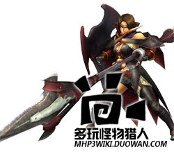 | △键 | 中段刺（可以连续输入3次） 切断属性 |
| ○键 | 上段刺（可以连续输入3次） 切断属性 | |
| 〇＋△键 | 横扫 切断属性 | |
| SELECT键 | 冲刺 切断属性 冲刺中△或〇：冲刺完结 冲刺攻击中消耗耐力。 冲刺中Ｘ：停止 | |
| ×键 |
后跳 | |
| □键 | 收武器 | |
| R键 | 防御 防御中△：防御刺 切断属性 防御中〇＋△：冲刺 切断属性 | |
| 收刀状态时R＋〇＋△ | 防御 防御中也可以移动 | |
| 攻击后立即摇杆＋Ｘ | 组合可以接续后跳和侧跳 | |
| R＋〇（R长按） | 防御反击 切断属性 ※防御中也可 | |
| 'R＋〇（R短按）' | 取消反击 切断属性 ※防御中也可 | |
| 防御中按住方向键时按△键 | 防御前进 | |
| 防御前进中△键 | 盾攻击 打击属性 ※连续专用攻击 |
铳枪
|
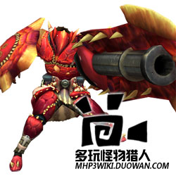 | △键 | 前方刺（可以连续3次攻击） 移动中△：踏步上刺 |
| ○键 | 炮击 锋利度最差状态（锋利度槽红色闪烁）不能进行炮击。 炮击、龙击炮以外的攻击，都是切断属性 | |
| 〇＋△键 | 捞击 | |
| ×键 |
后跳 | |
| □键 | 收武器 | |
| R键 | 防御 防御中△：上方刺 防御中〇：装填 防御中〇＋△：龙击炮 龙击炮发射后需要冷却，一定时间内无法再次使用。 | |
| 收刀状态时R＋〇＋△ | 防御 防御中也可以移动 | |
| 攻击后立即摇杆＋Ｘ键 | 可以接续后跳或侧跳。（炮击后不能接回避） | |
| 炮击后〇 键 | 快速装填 只能装填1颗弹药。 ※连续技专用 | |
| '各种攻击后，或者快速装填后，按住R的同时〇键' | 蓄力炮击 释放高威力的炮击。 可以接续回避动作。 ※连续技专用 | |
| 快速装填后，或者前刺的第二击之后△键 | 砸击 可以接续“龙击炮”“全弹发射”。 ※连续技专用 | |
| 砸击后〇键 | 全弹发射 射出全部弹药。残余弹药数越多威力越大。 ※连续技专用 |
轻弩
|
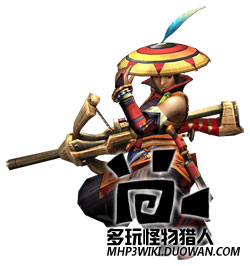 | △键 | 装填 |
| ○键 | 发射 | |
| ×键 |
小跳 | |
| □键 | 收武器 | |
| R键 | 短按：进入狙击镜模式 按住：进入简易瞄准模式（用方向键瞄准） 回到通常画面 | |
| SELECT键 | 近身攻击 打击属性 | |
| 摇杆和方向键 | 移动准星 |
重弩
|
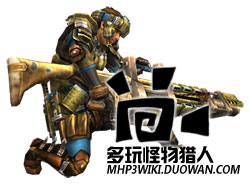 | △键 | 装填 |
| ○键 | 发射 | |
| ×键 |
小跳 | |
| □键 | 收武器 | |
| R键 | 短按：进入狙击镜模式 按住：进入简易瞄准模式（用方向键瞄准） 回到通常画面 | |
| SELECT键 | 近身攻击 打击属性 | |
| 摇杆和方向键 | 移动准星 | |
| 按下〇＋△后， 用△或Ｘ键选择弹种， 最后用〇确定 | 蹲下射击 无法移动，但可以暂时增加最大装填数。 按住〇可以连续发射子弹。 ※按Ｘ键回到通常状态。（这次的体验版中lv3通常弹和lv1减气弹对应蹲下射击） | |
| 收武器状态时R＋〇＋△ | 弹丸变更 L键按住打开物品窗口，用△或Ｘ变更弹丸 |
弓
|
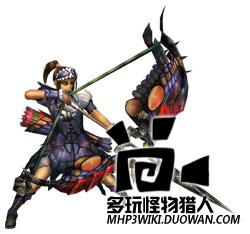 | △键 | 拉弓弦（放开△键发射） 拉弓期间消耗耐力 |
| ○键 | 近身攻击 切断属性 | |
| 〇＋△键 | 瓶装填 | |
| ×键 |
后跳 | |
| □键 | 收武器 | |
| R键 | 瞄准（可用方向键操作） | |
| 收武器装填时R＋〇＋△ | 近身攻击 | |
| 关于瓶变更 | 按住L打开物品窗口，用△或Ｘ键变更瓶。 瓶子每射击1次消耗1个，使用中的瓶子在耐力槽下方显示剩余个数。 | |
| 拉住弓弦的时候口键 | 回避动作 | |
| 蓄力到一定状态后 （按住△键的同时）〇键 | 曲射 | |
| 关于曲射 | 把特殊的箭射向上空，可以怪物的头顶攻击。虽然很难命中，却蕴藏着强大的威力。 能够夺取怪物的耐力，诱发眩晕状态。 ※曲射可能状态时，用R箭瞄准会出现曲射落下地点的标记，可以用方向键控制。 方向键上可以让落下地点变远，方向键下可以让落下地点变近。 |